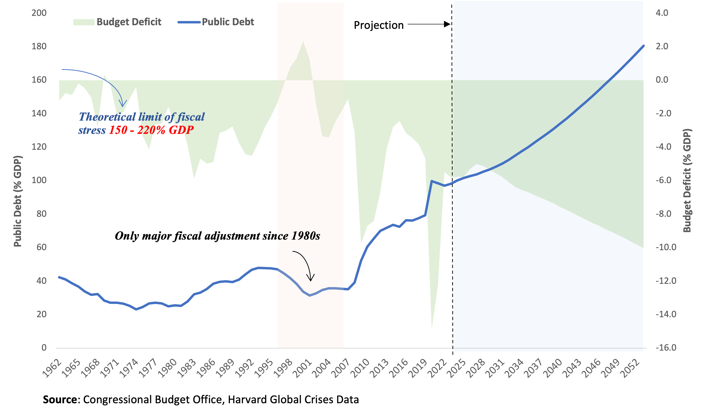
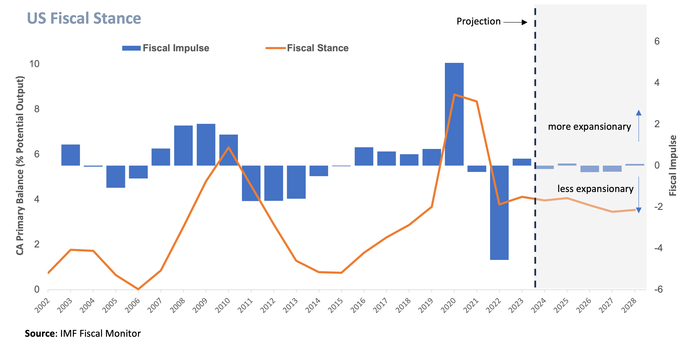
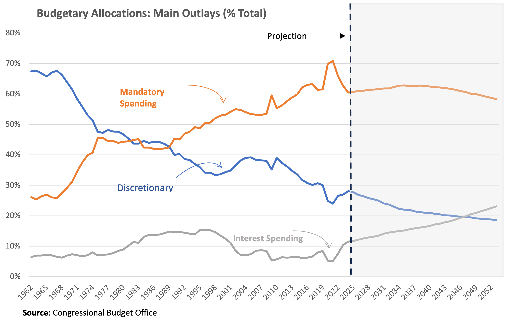
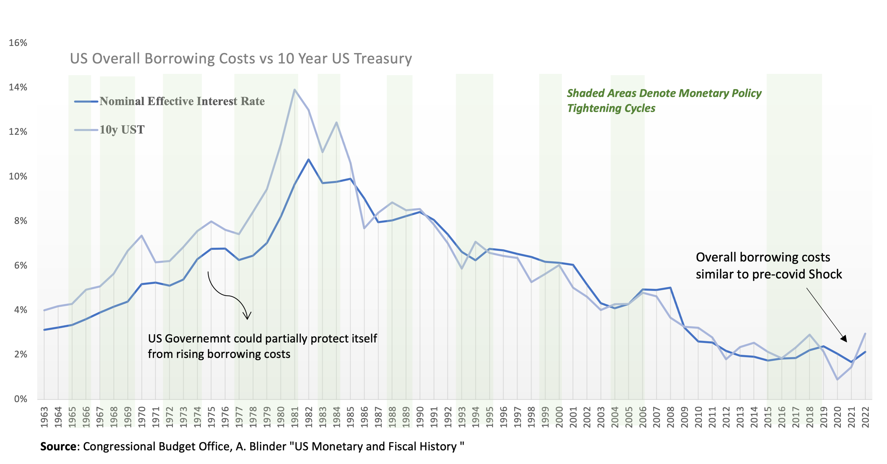
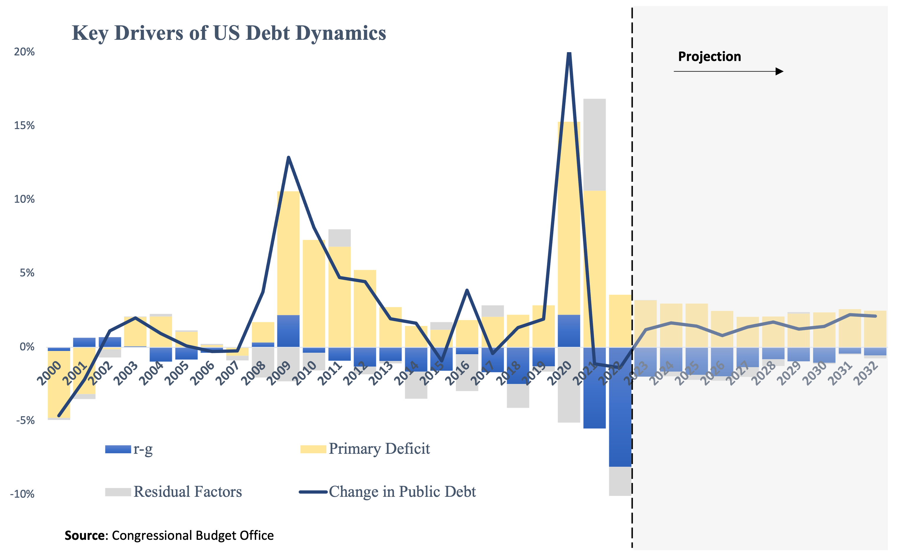
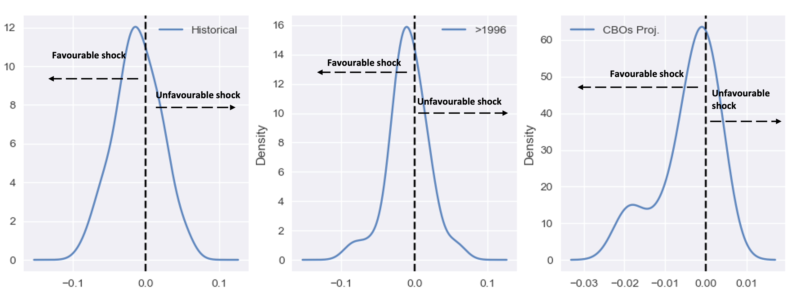
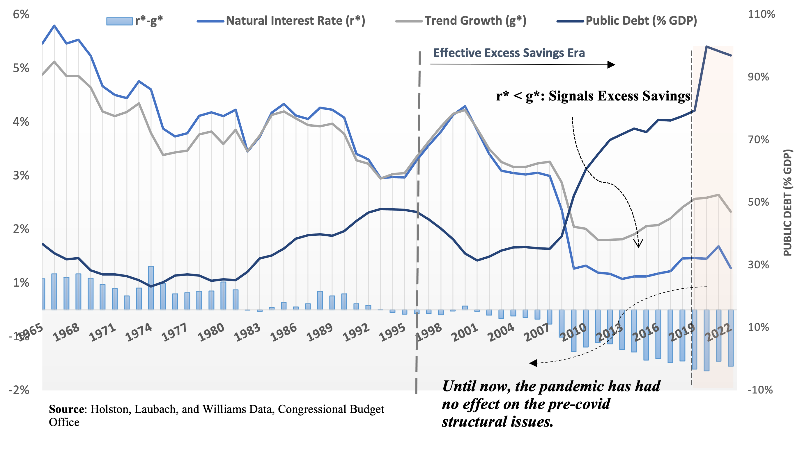
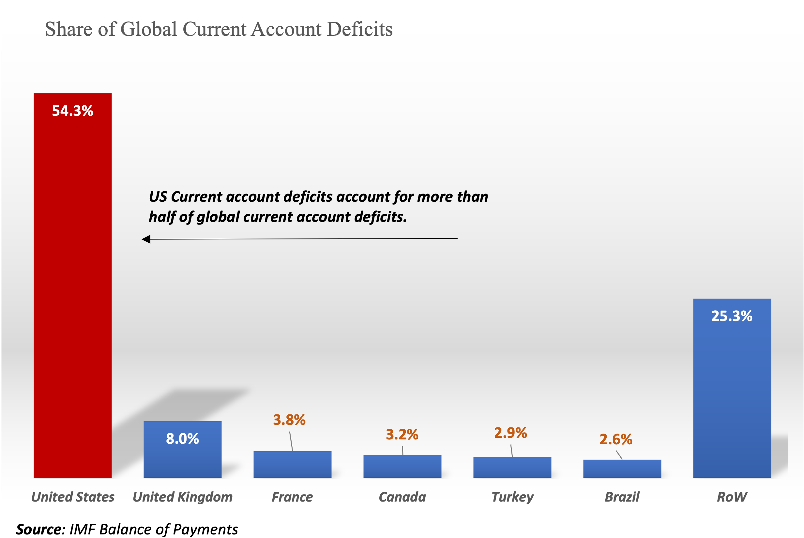
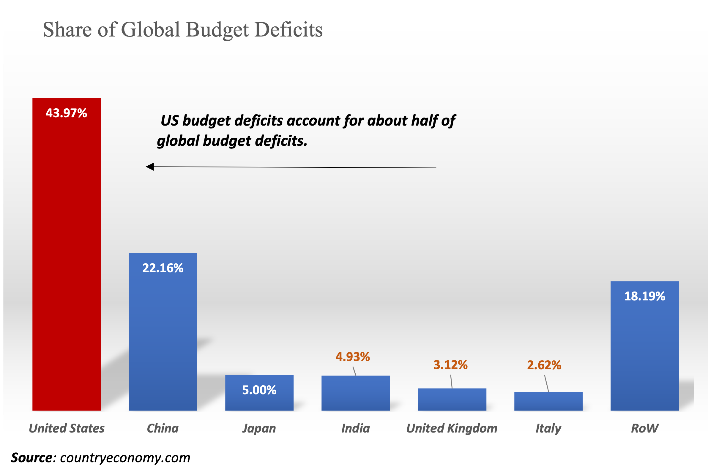

Is the US Fiscal Policy Reckless?
Explaining Why the United States’ Public Debt May Be Low
For some time, the United States’ fiscal policy has been expansionary, resulting in an increase in public debt. The recent pandemic shock added another record amount of public debt, raising concerns about whether the US public debt is too high and thus unsustainable. However, when some key fundamentals are considered, there is no compelling case to be made that US fiscal policy is reckless. On the contrary, the fact that the US public debt has been rising for some time is actually a good thing considering the prevailing fundamentals of secular trends.
Introduction
The US public debt has reached about 100% of GDP, and the Congressional Budget Office (CBO) projects that it will continue to rise if the US government continues to accumulate deficits (Figure 1). This raises concerns about the sustainability of public debt and the US fiscal policy more generally. Unsustainable US public debt could crack the entire financial system, with devastating consequences for the global economy. All of this has led to the (false) perception that US fiscal policy is “reckless” and government debt is out of control. In this post, I will give a quick overview of US fiscal policy and explain why I believe that this is not the case.

In the following sections, I will first provide an overview of the US fiscal situation and what primarily drives budget deficits. Then I’ll quickly discuss whether public debt is sustainable, and then I’ll conclude with a normative discussion of whether US fiscal policy is truly “reckless”. To be clear, the discussion here is about the trajectory of public debt, that is, its historical and expected trend.
US Fiscal Stance
Fiscal stance is a measure of whether government policy is stimulating the economy (expansionary), having no impact (neutral), or slowing the economy (contractionary). One common way to measure fiscal stance is the cyclically-adjusted primary balance (CAPB) as a fraction of potential output. Primary balance is the government’s budget balance adjusted for the business cycle. This removes the effects of the economic cycle on government budgets, so it is a better measure of policy decisions1.

Figure 2 shows that fiscal policy in the United States has been particularly expansionary at least since 2002 and according to IMF’s recent projections it is expected to remain so in the coming years, albeit at a slower pace. That means the US fiscal policy has been running deficits (unrelated to the cycle of the economy) for at least the last 20 years, and there is a good chance that this will continue.
What Drives US deficits?
The Congressional Budget Office (CBO) in the US groups spending into three broad categories: mandatory, discretionary, and interest spending. Mandatory outlays is seen as necessary for the economy to function, making it more difficult to change the law. In contrast, discretionary spending, such as defense spending, is more up to the government to decide what to do and hence is easier to change. The third category is self-explanatory: it is the interest paid by the government on its public debt.
So, what drives the US’s expansionary fiscal policy? According to the CBO data (Figure 3), the majority of the US government’s spending is on mandatory programs like Social Security and Medicare. As we can see, mandatory spending as a percentage of total outlays has been rising, particularly since the 1990s, and will most likely continue to consume the most of budgetary resources in the future. What we’re seeing here is the growing fiscal cost of population ageing as more people become eligible for mandatory programs like Social Security and Medicare. This is a problem that most of the advanced world is dealing with, not just the United States.

On the other hand, as the US began to invest less in national defense after the end of Cold War, the share of discretionary spending in the budget has been declining over time and this trajectory is expected to continue. Finally, the share of interest payments has been hovering around 10% of the budget for all of these years, though it is expected to reach record levels as public indebtedness rises under unchanged policies. Overall, however, the cost of social programs would continue to dominate the budget.
Spending is only one factor contributing to the budget deficits. Obviously, the other factor that determines deficits is revenues. I will skip a detailed analysis here. Clearly, revenues were insufficient in comparison to total expenditures. What is worth commenting, however, is that tax revenues as a percentage of GDP were only 25% in 2019, much lower than the OECD average. Now, according to the CBO, revenues account for approximately 20% of GDP. This also implies a reluctance to raise taxes to finance the fiscal impact of an ageing population or to support the delivery of essential public services. In terms of the United States’ overall budgetary policy, I would say that deficits are more of a tax issue than a spending issue.
Fiscal Sustainability
The growing US debt deficit raises concerns about the sustainability of public finances. To assess the situation, I will examine some key fundamentals.
- Low overall Borrowing costs:
Markets place a lot of emphasis on borrowing costs. Not unjustifiably considering that politicians cannot directly control interest payments. However, if you start reading the news, you will think that US start being charged loan-sharking interest rates. Let’s see what the reality looks like. Below I show the effective interest rate against the 10-year U.S. Treasury (UST) bond. The effective interest rate is the overall cost of borrowing that takes into account all interest rates that the US government is charged for issuing different debt products. For convenience, I also have the monetary policy cycles since 1960s. Here what is worth commenting is that monetary policy play does not seem to play a particular role for the sustainability of debt. Other fundamentals, like level of debt, population and technological growth, productivity, and so on, are the factors mostly influencing trends in borrowing costs.

In the current situation, do you see anything to worry about here? I don’t. Overall borrowing costs are at the same levels as before the pandemic (Figure 4). Debt service costs are still low, which is understandable given that long-term interest rates were structurally low before COVID-19. The monetary shock of the last 18 months is starting to have an impact on borrowing costs, but it is highly questionable whether this situation will last for too long as the diagram above also shows. It is also important to note that these are nominal borrowing costs. Subtracting inflation (which helps to deflate debt), the cost of borrowing is even lower .
Secondly, consider the years preceding the 1980s. The era of rising borrowing costs. We can see that the effective interest rate was constantly below the 10y UST. This reflects the ability of governments to partially hedge its borrowing costs against rising interest rates by rolling-over debt and exploiting different maturity structures. After the long-standing structural problems of the last few decades, the maturity structure played less of a role because interest rates across different maturities start converging to the same levels, and thus the effective interest rate and the 10y UST were quite similar2.
- Favorable r-g fundamentals:
Borrowing costs on their own do not necessarily matter. Measuring public indebtedness as a fraction of GDP, what effectively matters is the effective interest rate in relation to economic growth. In public finance literature, this is usually written as \(r-g\), where \(r\) is the previously mentioned effective interest rate and \(g\) is the nominal growth rate of the economy. This \(r-g\) gap has a simple explanation. When the economy grows faster than debt, the debt-to-GDP ratio falls (and vice versa). In practice, and from purely a public finance perspective, extra debt may be added when the government is dis-saving (accumulates primary deficits) or removed when the government saves money (accumulates primary surpluses). Then, the debt creating flows (i.e. how public debt changes period-by-period) can be decomposed in two main parts: the contribution of the \(r-g\) dynamics and b) the behavior of primary balances. Anything else we can assume for simplicity are residual factors (such the so called stock-flow adjustments). This decomposition is also appealing because it provides a high-level overview of the part of public debt over which politicians have direct control, namely primary balances, and the part over which they do not, namely \(r-g\) dynamics. So, how does the picture come together when we put all of these pieces together? This is how this decomposition looks when using CBO data.

Figure 5 which deconstructs the year-over-year change in public debt into \(r-g\), primary balances, and residual factors, reveals that the Congressional Budget Office (CBO) anticipates that \(r-g\) dynamics will remain favorable at levels comparable to the previous decade. This suggests there is no compelling reason to believe that the national debt has gotten out of hand. Just balancing out the books the debt-to-GDP would be facing a falling trajectory. But even if we assume that public debt can reach quite high levels, such as 150%-180% of GDP, the baseline projections imply that the US government would need a small primary surplus, close to 1%-1.5% of GDP, to stabilize debt at that levels. Not trivial, but not difficult either, given how feasible such an adjustment is for such an extremely high public debt level3.
- Balance of Risks
However, debt sustainability is more than just a baseline. From the perspective of risk management, the distribution of r-g shocks, which encompass virtually every type of shock that could occur in the United States as well as internationally, is also crucial. How does this appear when examining the history of these shocks?

Figure 6 shows the historical distribution of the r−g gap since the 1960s, as well as after the mid-1990s and what the Congressional Budget Office (CBO) projects. This analysis leads to two conclusions:
A negative r−g gap is usually the norm than the exception across all cases.
The balance of risks is asymmetric in favor of public finances, with the likelihood of favorable shocks (\(r<g\)) exceeding the chance of an unfavorable shock.
Simply put, during periods of economic uncertainty, governments, particularly the US government, can effectively leverage their perceived stability and creditworthiness to secure advantageous financing terms when issuing debt. This phenomenon, commonly referred to as a “flight to safety,” reflects the heightened demand for safe-haven assets during periods of stress. In such instances, investors seeking to preserve capital gravitate towards the perceived security of government bonds, driving down yields and facilitating debt issuance at attractive rates.
The US government, in particular, enjoys a unique position as a global financial anchor, benefiting from its deep and liquid bond market, strong fiscal institutions, and perceived resilience to economic shocks. This privileged status often translates into lower borrowing costs compared to other sovereigns, even during periods of heightened uncertainty.
While specific shocks, such as a US-induced financial crisis, could temporarily disrupt this dynamic, the overall trend suggests that governments, particularly the US government, can effectively utilize debt issuance as a counter-cyclical tool to manage their fiscal needs during periods of stress. In other words, the larger the negative risk event, the higher the bid for US bonds.
A Fundamental Criterion to Assess the US Fiscal Stance
The previous analysis implies it only implies that the United States has in principle an ability to sustain high debt. But the real question here is whether the US should actually do it. In public debates such strategy is frequently ruled out as reckless. However, in more general terms public debt is a very special instrument, and especially the US debt with the aforementioned properties needs not only balancing the public accounts but also the economy.
So, how can we tell if the fiscal situation is reasonable? So far, we have seen that the public debt is still under control. Should we consider where the US spends its money as the primary criterion? Many analysts continue to spread the myth that most US government spending is wasteful, but the vast majority of funds are spent on essential public services. So “reckless” isn’t the right word. Perhaps it’s a better word for the tax policy. The capacity of US deficits to absorb global savings and the (good) potential for crowding out excessive levels of savings and private capital, in my opinion, is the criterion that mostly applies in the current context (and for which where money is spent is less of an issue).
Generations of economists have been taught that crowding out private capital is always a bad thing. In the United States, it is definitely an ideologically appealing argument, helped by the fact that saying the opposite is counter-intuitive to the general public. “How can crowding out private investment ever be beneficial to the economy?” someone might ask. Actually, the answer is quite simple:
“…the presumption that increasing investment is always good for the economy relies on the fact that more investment leads to more output in the long run, and that more output helps achieve higher consumption. The first fact is mechanical, but the second is not necessarily true, because more capital also means more investment to maintain the same capital/output ratio. Consequently, there are limits as to how much capital should ideally be accumulated…”4
For decades, China has focused on export-led growth, but it is now realizing that domestic consumption is a more sustainable driver of economic growth. Japan’s long-term experience with the “savings trap” is another example of the consequences of excess capital.
Before proceeding, it is essential to differentiate between crowding out of capital over the business cycle and crowding out of capital over time. According to Keynesian theory, public debt cannot crowd out private investment in the short run, especially during recessions, because private investment is more sensitive to short-term economic growth prospects than to interest rates. However, public debt can crowd out private investment in the long run by increasing interest rates and decreasing the supply of loanable funds. Therefore, when I refer to crowding out of capital, I am referring to this long-term process, not the short-term one. The empirical evidence is crystal clear here and quite robust5.
To return to my original point, I believe that until we are really done with the structural problem of excess savings US debt might actually be too low. To clarify, this situation should not be confused with the excess savings from the pandemic or the zero-interest rate policy (ZIRP) era. Even though central bank interest rates are now relatively “high”, the economy may still be accumulating more capital than it needs, as it likely did before the global financial crisis. By excess savings I refer to the structural issue in which the supply of savings permanently exceeds the demand for savings. As we all know by experience, this can lead to a number of economic problems, including slow growth, low interest rates, financial crises, asset bubbles, excessive risk-taking, misallocation of resources. The US public debt is one way to permanently address these problems by creating the extra capacity to absorb more excess savings. The question then is how to assess whether we are still living in this world. The next section takes this issue more closely.
When An Economy is Producing More Savings than Necessary
The idea that an economy might over-accumulate capital, or save more than it needs to, is a possibility that many people can understand. However, it is more difficult to test this idea empirically and measure it in real time. Before I illustrate this, let us briefly review the concept of capital accumulation. Here I want to clarify that capital, savings, liquidity can be used interchangeably.
Do you recall Thomas Piketty’s international best-selling book? He referred to the situation in which the long-term interest rate (\(r^*\)) exceeds long-term economic growth (\(g^*\)) as the fundamental law of capitalism. This was the “normal” situation for most of the twentieth century. According to neoclassical economics, in this situation capitalism accumulates capital at the appropriate rate. However, neoclassical (or mainstream) economists have studied when this scenario might fail (for example, population ageing, incentives to accumulate wealth for retirement, so private pension schemes or replacing the welfare state with self-insurance mechanisms could be a bad idea in neoclassical economics). They predicted the consequences of the case where \(r^*<g^*\), and provided the “Marxist” recipe that in this case, capitalism might need a large expansion of government to save itself. This condition, when \(r^*<g^*\), is also the technical criterion that has been developed to assess whether an economy produces more savings than is required. In academic writing it is called “dynamic inefficiency”. “Dynamic” because it talks about how savings and capital build up over time (hence structural issue), and “inefficient” because the rate of building up capital (equivalently liquidity or savings) is too fast.
Because this is a new concept for most, let me try to explain it more simply.Dynamic inefficiency is an economic condition where the rate of capital accumulation exceeds the optimal level, leading to an inefficient allocation of resources and hindering long-term economic growth. This phenomenon is often observed in economies with a high savings rate, as excessive saving diverts resources away from current consumption and potential investment opportunities. This is why there is high chance ending in prolonged``liquidity or savings traps” as mentioned before.
The term “dynamic” emphasizes the time-dependent nature of this inefficiency. Capital accumulation, while beneficial for long-term growth, should occur at a pace that aligns with the economy’s productive capacity and demand for capital goods. When capital accumulation outpaces these factors, it signals a misallocation of how much we need to consume today vs the distant future, resulting in dynamic inefficiency.
The label “inefficient” highlights the sub-optimal allocation of resources caused by excessive savings. When savings exceed the optimal level, the economy prioritizes capital accumulation over current consumption and potential investment opportunities that could yield higher returns. This misallocation of resources hinders the economy’s ability to achieve a sustainable and balanced growth path.
In essence, dynamic inefficiency arises from a disconnect between the pace of capital accumulation and the economy’s ability to effectively utilize it. Excessive savings lead to an oversupply of capital, while the demand for capital goods lags behind. This imbalance creates a situation where resources are not optimally allocated, resulting in slower growth and diminished economic welfare.
The consequences of this equilibrium have long been discussed and understood in academia, including replicating ``Keynesian” ideas such as animal spirits and coordination failures, the build up of asset bubbles and increased financial fragility, the higher incentives of firms to buy their own stocks instead of investing and so on. In other words, fits well the stories describing the world before the pandemic. The paper of Geerolf has a nice review of what I discussed so far.
Note, the fact that the identity is \(r^*<g^*\) does not necessarily imply that long-term growth is “high”. However, because it differs from the usual case in which \(r^*>g^*\), it has the interpretation that interest rates are low. Consider that there is a hypothetically ideal level of capital (academics call it the “Golden level or Rule”) against which actual capital can be compared. When actual capital exceeds this ideal, capital is “too high” and accumulates at an unsustainable rate, causing interest rates (returns on capital) to fall.
Because I mentioned a few “stars,” it’s worth clarifying a few points. The confusion between what academics say and what policymakers, researchers, and market participants understand about what constitutes a low interest rate environment and the “stars” (that are usually discussed in public discussions and continue to grow in number) is so widespread that, as someone who has experienced all sides (academia, policy-making, markets), I begin to believe that each participant has invented its own school of thought about macroeconomics. The previous discussion of secular stagnation added more ambiguity to the situation. And I worry that many people will be very confused by these discussions.
To help clarify the situation. I am not referring to secular stagnation in what I have said. This isn’t necessary to the point I’m making about public debt, but it has the similar implications as the secular stagnation hypothesis. Secular stagnation is a hypothesis that says the economy is slowing down because there is not enough demand for investment. Technically, it poses the hypothesis that investments (\(I\)) are persistently lower than savings (\(S\)). Everything that stems from this hypothesis about interest rates and \(r^*\) are just conjectures influenced by the theories about excess savings that I previously discussed. This mixture can be found in Blanchard’s post, though his (mistimed due to the pandemic events) book more than clarifies the relevant concepts here.
Another difference that I want to highlight is that secular stagnation assumes that the imbalance is in the aggregate demand (which is I find it hard to believe, but easier to sell to governments), while the dynamic inefficiency criterion (\(r^*<g^*\)) assumes that the imbalance is in the financial markets, which is more consistent with the “global savings glut”. So, secular stagnation you need more debt to clear aggregate demand, while the dynamic inefficiency you need more public debt to clear financial markets.
From the more practical point of view, another limitation of the secular stagnation hypothesis is that cannot be really tested. After all, for countries with current account surpluses the condition \(I<S\) always holds. Is this to say that China, whose \(S\) was always higher than \(I\), was in a long period of stagnation? Not at all. In contrast, the \(r^∗<g^∗\) condition is a standard, well formalized, and understood criterion for excess savings with solid and mature theoretical foundations and with (academic) economists having long understood its consequences to a country’s long-term prospects and risks. Taking again China as an example, the empirical evidence suggests that China “today is unquestionably in a state of severe dynamic inefficiency, and the inefficient status is likelyto continue in near future”. Hence, confirming what most people believe that China has been savings too much.
The savings glut and, by extension, the dynamic inefficiency hypothesis better explain the post-1980s reality, including the nature of the shocks that triggered excess savings, such as China’s one-child policy. In his book ``End of Alchemy”, former UK central banker Mervyn King provides an excellent account of these events and their (well-known) consequences:
“… [In China] The desire to save was very strong. In the absence of a social safety net, households in China chose to save large proportions of their income to provide self-insurance in the event of unemployment or ill-health, and to finance retirement consumption. Such a high level of saving was exacerbated by the policy from 1980 of limiting most families to one child, making it difficult for parents to rely on their children to provide for them in retirement
“… Keen though western consumers were on spending, their appetite was not strong enough to offset the even greater wish of emerging economies to save…The consequence was that in the world economy as a whole there was an excess saving, or in the vivid phrase of Ben Bernanke .. a ‘savings glut’…. This glut of saving pushed down long-term interest rates around the world…”
“…with interest rates so low financial institutions and investors started to take on more and more risk, in an increasingly desperate hunt for higher returns without adequate compensation [ i.e. the risk premium between safe assets like UK or US government bond and other financial assets was very low] such behavior become known as “search for yield” …… Banks played their part in meeting this search for yield. They created a superstructure of even more complex financial instruments…. Both the complexity and the size of financial assets increased markedly. Low interest rates were encouraging households to bring forward spending from the future to the present [i.e. borrow]. That, too, could not continue indefinitely – and it didn’t.
.. Central banks provided emergency loans, but these amounted to little more than holding a sheet in front of the Emperor – in this case the baking system – conceal his nakedness. It didn’t solve the underlying problem: banks needed not loans but injections of shareholders capital to reduce their extraordinarily high levels of leverage and to absorb losses from risky investments they made….The system staggered on for a year. Market confidence in banks ebbed and flowed. But on 15 September the long-established investment bank Lehman Brother failed…“
The Question of Public Debt
Ironically, in the 1980s, economists like Larry Summers convinced people that advanced economies could never be in a situation of excess savings. This not only consolidated the idea that crowding out private capital is always a bad idea but also contributed in designing fiscal frameworks where public debt was treated and seen more as an instrument for managing the economic cycle, along the lines of Keynesian economics. Hence, fiscal frameworks never build any capacity to foresee structural problems and view public debt as a tool treating excess savings. We also had all those reforms that the general public knows by the name “neo-liberal agenda”, which includes the advent of private pension systems, weakness of welfare state, and so on and helped accumulate extra buffer of savings. These issues were revisited after the Global Financial Crisis, but it was already too late.
The evidence from Summers et al. is too old to be useful now. So the question is whether we are still in this secular trajectory of excess savings, and hence if still makes sense to take this as the starting point in assessing US public debt. Some new evidence says so, confirming essentially Ben Bernanke’s hypothesis that the global economy has a savings glut problem. For reasons that I will explain later, when the global economy as a whole has a savings glut problem this mostly likely implies that the United States has it too. And, US public debt is key to fixing this problem.
To get a more “real-time” estimate of whether that starting point is still appropriate in the current circumstances, I’ll use the Holston, Laubach, Williams (HLW) dataset, which produces estimates for both \(r^*\) and \(g^*\), and are the closest proxies for assessing dynamic inefficiency in real-time. People use their estimates to look at \(r^*\), possibly because they are more preoccupied with the day-to-day developments in the economy and what monetary policy is doing. But If we want to consider whether we are still in the same secular trend in which the there is a tendency in producing more liquidity that can be absorbed, then we should be looking at the level of \(r^*\) in relation to \(g^*\). That is why I also think that in this case “how accurate” the estimation of \(r^*\) across different models is irrelevant; what matters is if the signal from these models are pointing to the same secular trajectory for the \(r^*-g^*\) gap.
Figure 7 shows how the real interest rate \(r^*\), the long-term growth \(g^*\), and the gap between them (\(r^*−g^∗\)) have evolved over time, along with the debt-to-GDP ratio, since the late 1960s. The data shows that both \(r^*\) and \(g^*\) have declined over time, and this is not a coincidence. While other factors, such as productivity growth, may also play a role, the accumulation of capital (savings) is certainly a major driver and common factor affecting the \(r^*−g^∗\) gap. The consequences of excessive savings start to become visible in the early 1980s. When savings begin to accumulate more quickly, we first notice a decrease in the \(r^*−g^∗\) gap. As savings become excessively high as a result of even higher global saving rates, the gap becomes negative. In other words, as excess liquidity became too prevalent around the world, it began to show up in US data as well. The turning point for the sign reversal in \(r^*-g^*\) occurred around the mid-1990s, coinciding with the acceleration of globalization and the increased free movement of capital across the world. For example, the share of external debt as a percentage of total debt began to rise not only in the US, but also in countries like Greece.

The \(r−g\) gap in public finance and the \(r^*−g^*\) gap here are typically linked. A favorable r−g gap helps sustain public debt and the US government’s ability to maintain higher debt levels. This ability can help address the issue of excess savings. In simpler terms, US debt is most likely to be sustainable when the world saves more than it spends. The strong correlation between the \(r−g\) gap and excess savings is evident when we combine the evidence presented here with the CBO data discussed earlier. Both show negative r−g gaps after 2000. However, excess savings is a sufficient but not necessary condition for the public finance \(r−g\) gap to be negative. Therefore, without further investigation, it is unclear whether the CBO’s long-term projection of a negative \(r−g\) gap also indicates that excess savings are expected to persist. Nonetheless, the evidence here also shows that the \(r^*−g^*\) gap is still negative even after the pandemic, suggesting that the secular problem of excess savings is still persisting. Therefore, starting from this situation strengthens the case for assessing public debt in light of its ability to absorb excess liquidity and crowd out excess savings.
The evolution of public debt in relation to the \(r^*-g^*\) dynamics is also worth discussing. According to Figure 7, the crowding-in (in this case) effects of falling public debt supported high levels of \(r^*-g^*\) gap during the first period of falling public debt. During the early 1980s, when the \(r^*-g^*\) gap began to close, some early warning signs began to emerge. It was a time of greater economic integration and a greater influx of liquidity into the United States. It is probable that the rising debt levels during this period partially offset the excess liquidity, this time as a result of crowding out effects. But as \(r^*-g^*\) was close to zero, this level of public debt may have been close to optimal at the time (a situation referred to in academic writing as the Golden Rule). This observation, coincidentally or not, appears to be supported by some contemporary literature.
In the mid-1990s, excess liquidity began to build up. The subsequent debt adjustment may have been too extensive contributing to excess savings even domestically in the US. After 2000, things changed rapidly. Public debt and the \(r^*−g^*\) gap began moving in opposite directions, with debt rising and the gap declining, though it remained negative. The negative gap was further amplified by the Global Financial Crisis, despite the even faster rise in public debt. While correlations do not necessarily imply causation, and public debt could have crowd out capital, I believe that this clear disconnect between \(r^*\) and public debt, as well as between public debt and the \(r^*−g^*\) gap is due to two main reasons: (a) foreign lending and (b) excessive quantitative easing (QE).
First, during this period there was a massive influx from abroad to the US helping financing the US deficit. Overlapping global shocks, such as the global financial crisis, the Eurozone crisis, Brexit, and trade wars have led to excess fiscal adjustments in some countries (e.g., the UK and the Eurozone), higher uncertainty, and enormous surpluses in others (e.g., Asian countries). This has created a strong demand for US Treasury bonds, which has helped to finance the US deficit. The large inflow of foreign lending, which the Federal Reserve was not considering when making its quantitative easing decisions, significantly reduced any crowding out effects. This allowed the natural rate of interest \(r^*\) to remain low, and this in turn might have also dragged down long-term growth rate \(g^*\).
Second, fiscal policy is often blamed for being too tight during this period, but I believe that the real issue was ultra-loose monetary policy. As I showed before, fiscal policy was overall expansionary. If monetary policy had not been so aggressive with enormous amounts of quantitative easing (QE), fiscal policy would have been able to crowd out more of the excessive savings in the US and abroad. Rising long-term real interest rates would have been all that was needed to lift all boats (inflation, recovery, growth, etc.). Crowding-out excess savings and private capital was essential for this and the Fed did not let it happen efficiently. Without a fiscal-monetary framework, monetary policy did not internalize the enormous global demand for US Treasuries and, by extension, the enormous amounts of foreign lending financing public debt. This distorted the proper functioning of public debt to absorb more of the excess savings and crowd out capital, so real interest rates could start rising again.
Would fiscal policy have been that expansionary without such ultra-loose monetary policy? In my view, yes. That is because most of this expansion was due to the mechanical increase in the cost of social programs. In other words, population aging and its fiscal impact on the budget were colliding to increase real interest rates, but the Fed severely distorted a better outcome.
Finally, closing the gap between the real interest rate (r*) and the economic growth rate (g*) does not necessarily mean that public debt will hurt growth. While there is evidence of the negative consequences of public debt on long-term growth, this evidence fails to distinguish between excess capital and non-excessive capital. Some new theoretical work also confirms this intuition. It is also masked by the fact that most of this evidence combines data from all countries and time periods, so the results are biased by periods of high population growth and no excess savings. Additionally, the evidence fails to show what happens to growth when public debt is used to finance social programs.
In addition, we should not forget history here. For instance, history has shown that a potential contributing factor to the Industrial Revolution in Great Britain was the towering levels of public debt (which at the time was financing wasteful wars). This debt crowded out excess capital, enabling the nobility to abandon low-return investments like agricultural improvements and switch to emerging and more productive sectors like textiles and iron. In that sense, China’s dominance might actually accelerate if more of its excess savings instead of financing US deficits are used to finance domestic investments and public expenditures – as the plan currently is set up.
Therefore, until we are sure that long-term trends have substantially changed and the world, and by extension the US economy, is no longer living in an excess savings trajectory, the US public debt should be kept high.
US Fiscal Policy is World’s Fiscal Policy
I mentioned before that it doesn’t really matter whether the world or the US itself has a savings glut issue. Here’s why. Figure 8 shows the global shares of budget and current account deficits for the US and other countries. The US current account deficit accounts for more than half of global current account deficits, and the US budget deficit is also large, accounting for close to 44% of the world’s total. To put it simply, the US is absorbing nearly two-thirds of global savings, with a significant proportion of this coming from the budget deficit.


Although these numbers raise many other questions and expose some vulnerabilities, they also show that US fiscal policy is, in effect, the world’s fiscal policy. As long as the world as a whole continues to produce surpluses at a faster pace than the US produces deficits (a scenario that is not implausible given population aging, for example), US public debt is unlikely to have a significant impact on either domestic or global interest rates (\(r^*\)), or to crowd out a significant amount of capital (if at all in this case).
From this perspective, US public debt could still be too low, and the years ahead could resemble the (the equally unhealthy as the ZIRP) period before the Global Financial Crisis. The fiscal policies of other countries also matter, especially China’s, and to some extent the UK’s, Japan’s and Germany’s. But the lion’s share of responsibility for leading the world to a more robust growth prospects currently falls on US fiscal policy.
Conclusions
The US public debt is rising, which is helping to absorb the world’s excess savings. Given long-term trends, increasing US public debt may be a good thing until there is evidence that this excess savings has been removed.
Public debt is not the only way to account for excess savings, but it is required if the global picture remains unchanged (i.e., same or worse welfare state, weak labour markets, hyper-globalization, further expansion of the private pension system, extreme wealth concentration, and so on). We can debate how best to spend this money and the mechanism to accomplish this, such as spending on public investments, causing some inflation to force the Fed to keep interest rates higher, financing climate change, or a combination of all of these, but being bold in mitigating the perpetual risk of excess savings within the financial system is not inherently harmful. High public debt in the United States can accomplish this by changing market incentives and discouraging excessive risk-taking behaviour. This, in turn, leads to a sustained period of strong global economic growth. However, achieving this would be contingent on three critical factors: foreign lending, domestic tax policies, and China’s fiscal framework. These factors are directly related to how much excess liquidity and private capital the US debt can accommodate, as well as the optimal debt level. Until we see a meaningful closing of the $r* - g*$ gap The public debt in the United States is far from optimal.
This is not to say that some short-run adjustment is not required, but the current signals indicate that significant debt adjustments that would necessitate running primary surpluses are not required.
Keeping US debt high until markets change their incentives would reduce the incentives to accumulate capital much faster than necessary and save too much. Of course, how quickly we reach that optimal point will be determined by other factors as well (e.g., slowing globalisation, social reforms that reduce the incentives to save, etc.), but the US public debt is part of this equation and a countervailing force against saving too much.
Footnotes
The primary balance is government revenues minus expenditures, excluding interest. Interest payments are excluded because politicians don’t control them. If the economy were at its long-term potential, the cyclically-adjusted primary balance would then given an estimate of fiscal stance, so we can see what the government is doing without the effects from business cycle or automatic stabilisers.↩︎
The US government also start issues different products, like inflation-linked bonds and introduced more options for duration.↩︎
Consider that Greece was required to maintain primary surpluses of about 3% at these levels of debt. So more than double the effort from the US.↩︎
See the excellent survey and article by Geerolf.↩︎
See for example here, here, and here. For a more accessible discussion, I think this Medium post is also good.↩︎